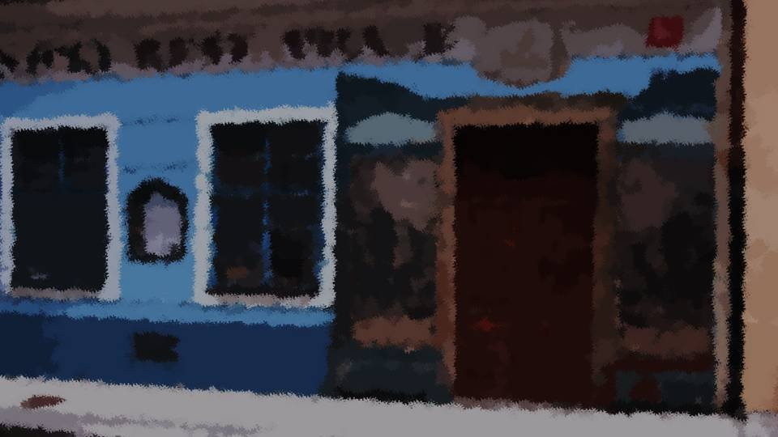
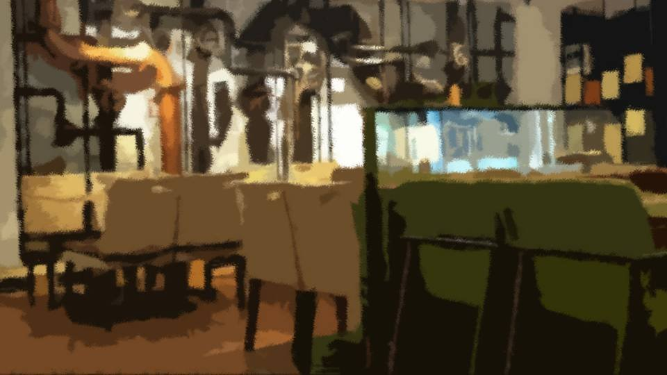
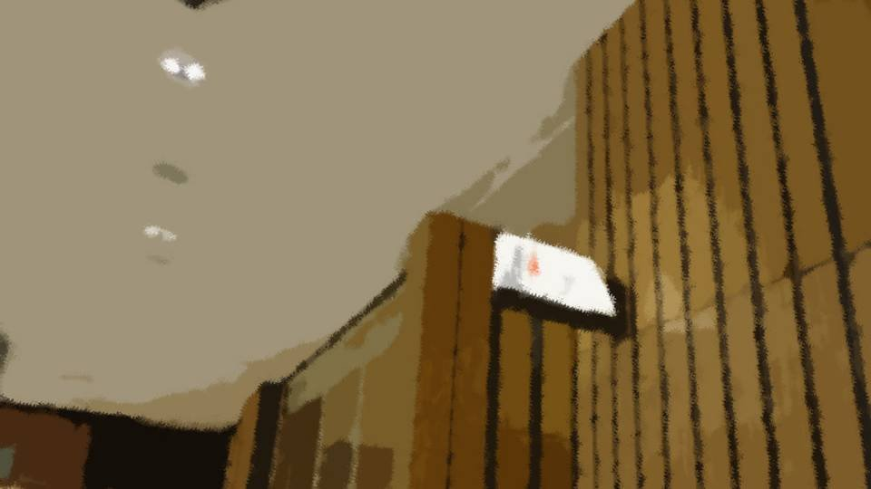
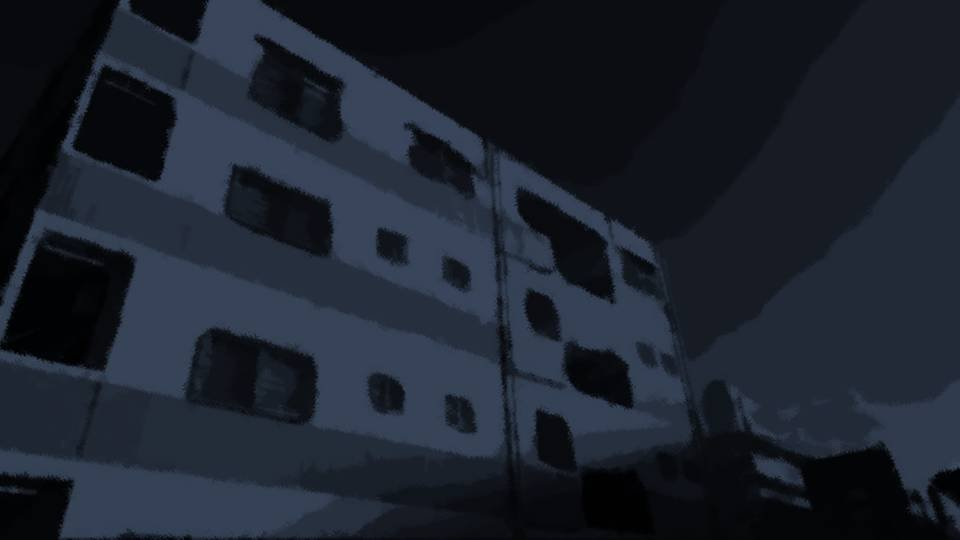

This scene is not unlocked yet in your progress
鏡(あなた)

合コン当日――。
私が連れてこられたのは、元木町に最近できたイタリアン居酒屋だった。
元木町はこのように新しいお店がどんどんでき始めている。
約束通り、良治さんの同僚を紹介してもらうことになったのだけど……。
私が連れてこられたのは、元木町に最近できたイタリアン居酒屋だった。
元木町はこのように新しいお店がどんどんでき始めている。
約束通り、良治さんの同僚を紹介してもらうことになったのだけど……。

「少し早く着いちゃったわね。中で待ちましょう」
「うぎゅ……。私なんて気に入ってもらえるのかな……」
「ここまで来て、帰るなんて言わないわよね？」
「さすがに帰ったりはしないけどさ……。ちゃんと話せるかな……」
「うぎゅ……。私なんて気に入ってもらえるのかな……」
「ここまで来て、帰るなんて言わないわよね？」
「さすがに帰ったりはしないけどさ……。ちゃんと話せるかな……」

案内されたテーブルには、4人分のグラスや皿が用意されている。
これって少人数とは言え、合コンになるんだよね？
お金のことは気にしなくていいなんて言われたけど、やっぱり緊張するよ……。
これって少人数とは言え、合コンになるんだよね？
お金のことは気にしなくていいなんて言われたけど、やっぱり緊張するよ……。
「ねえ……私、何話したらいいのかな……。男の人とまともに話すなんて……」
「私たちがうまく誘導するから大丈夫よ。良治君も全面協力するからさ。
ちょっと練習しようか」
「うぎゅ……お手柔らかに……」
「うぎゅ……お手柔らかに……」
「じゃあ、自己紹介を」
「え！？ 自己紹介って何言えばいいの！？」
「名前と歳くらい、言えるでしょ？」
「え！？ 自己紹介って何言えばいいの！？」
「名前と歳くらい、言えるでしょ？」
「うぎゅ……えっと名前は……
美冬……
金井です……」
「外国人かよ……」
「外国人かよ……」
「もういや……！ 練習で名前も言えないなんて……！」

「仕方ないわね全く……。
ほら」

茜は1枚の紙を寄こしてきた。
「それに美冬の自己紹介リスト、書いてるから。
それ見ながらゆっくり話せばいいわよ」
紙には私の名前だけでなく、経歴や趣味なんかが書かれている。
紙には私の名前だけでなく、経歴や趣味なんかが書かれている。
「いい？ 紙を見てもいいけど、目線は常に栄一郎さんの方に向けること」
「うぎゅ……頑張る……」
ずいぶんと細かいメモだなあ。
私たちは、合コンの約束をして以来初めて会ったのだけど、茜は最近忙しそうだった。
「うぎゅ……頑張る……」
ずいぶんと細かいメモだなあ。
私たちは、合コンの約束をして以来初めて会ったのだけど、茜は最近忙しそうだった。
というのも、茜と良治さんの結婚が決まり、その準備に取り掛かっているそうだ。
10ヶ月後に挙式予定だそうだけど、その合間を縫ってこのメモを書いてくれたのだ。
それにこれは、私のことをよく知っている茜だからこそ書けるもの。
さすがにこれを見ては、この縁談を蔑ろにするわけにはいかない。
10ヶ月後に挙式予定だそうだけど、その合間を縫ってこのメモを書いてくれたのだ。
それにこれは、私のことをよく知っている茜だからこそ書けるもの。
さすがにこれを見ては、この縁談を蔑ろにするわけにはいかない。
「あ、来たみたいよ」
反射的に全身の背筋が伸び、呼吸が止まる。
ついに来た……！ 茜の顔に泥を塗るわけにはいかない。
大丈夫！ 茜たちの紹介なのだから、素敵な人に違いない！
反射的に全身の背筋が伸び、呼吸が止まる。
ついに来た……！ 茜の顔に泥を塗るわけにはいかない。
大丈夫！ 茜たちの紹介なのだから、素敵な人に違いない！

「お。俺たちの方が先に着いたと思ったのに、ずいぶん早かったんだな……」
「ちょっとでも美冬に場慣れさせようと思ってね」
良治さんの隣にいたのは……。
「ちょっとでも美冬に場慣れさせようと思ってね」
良治さんの隣にいたのは……。

「お……
うう……」
この人が新村栄一郎さんだろうか。
話に聞いていた通り、背が低く、体型は明らかに標準オーバー。
顔はイケメンとは言い難いけど……。
でも、外見なんてどうでもいい。
問題は私の家族になれるかと言う、重たい理想像に合うのか……。
この人が新村栄一郎さんだろうか。
話に聞いていた通り、背が低く、体型は明らかに標準オーバー。
顔はイケメンとは言い難いけど……。
でも、外見なんてどうでもいい。
問題は私の家族になれるかと言う、重たい理想像に合うのか……。
「ほら栄一郎、座れって」
「ふう……ふう……」
この栄一郎さんって言う人、ずいぶん汗をかいていて呼吸が荒い。
もしかして、この人も緊張してるのかな……。
「ふう……ふう……」
この栄一郎さんって言う人、ずいぶん汗をかいていて呼吸が荒い。
もしかして、この人も緊張してるのかな……。
「あ痛！」
栄一郎さんは何もない空間に足を引っ掛け転んでしまった。
「おい、大丈夫か？」
「だだだだいじょうび……！」
良治さんに支えられ、ようやく席に着く。
そんなに緊張されたら、こっちまで余計緊張しちゃうよ……。
栄一郎さんは何もない空間に足を引っ掛け転んでしまった。
「おい、大丈夫か？」
「だだだだいじょうび……！」
良治さんに支えられ、ようやく席に着く。
そんなに緊張されたら、こっちまで余計緊張しちゃうよ……。
――ほどなく、乾杯用のお酒が届いた。
「今回は栄一郎と美冬さんの紹介ってことになってるけど、まあ楽しく気軽にやろうや」
「そうね、気軽にやりましょう。 じゃあ、乾杯」
「そうね、気軽にやりましょう。 じゃあ、乾杯」
「あ……
ああ待って！」

「あ、あのさ……良治と茜ちゃん……結婚するんだろ？
だったら、そのお祝いもかねて乾杯したいかな……」
栄一郎さん、ずいぶん気を遣うなあ。いい人なのは間違いなさそうだ。
栄一郎さん、ずいぶん気を遣うなあ。いい人なのは間違いなさそうだ。
「そ、そうですよね！ やっぱり今回は2人の結婚祝いをしましょう！」
「2人とも、ありがとう。
でもそんなことはいいの。今日の主役は2人なんだから」

「そうそう。俺たちは脇役」
「じゃあ、乾杯！」
「ゴクゴクゴクゴク……！」
「ゴクゴクゴクゴク……！」
栄一郎さんは一気にビールを飲み干した。
よく見ると顔が真っ赤で手が震えている。
目元がちょっと鋭いし、顔の筋肉がピクピクしてる。
もしかして、緊張と言うより怒ってる？
私のこと、うじうじしたダメ女って見抜かれたのかな……。
目元がちょっと鋭いし、顔の筋肉がピクピクしてる。
もしかして、緊張と言うより怒ってる？
私のこと、うじうじしたダメ女って見抜かれたのかな……。
「ごごごめん！ ちょっとトイレ！」
と、栄一郎さんは良治さんに視線を送る。
と、栄一郎さんは良治さんに視線を送る。
「あ、俺も行ってくる」
2人は同時に席を立ってしまった。
もしかしてこれって！ 合コンでよくある、裏で相手の不満を言いまくるやつ！？
もしかしてこれって！ 合コンでよくある、裏で相手の不満を言いまくるやつ！？

「おい良治……！ 勘弁してくれよ……！」
「え？ 美冬さん、気に入らないか？」
「そうじゃなくて！ なんでよりによって、あんな美人を連れてくるんだよ！ どう考えて僕には釣り合わないよ！」
「そう力むなって。お前と相性いいと思うぞ？」
「くそう。この顔と体型が恨めしい……」
「え？ 美冬さん、気に入らないか？」
「そうじゃなくて！ なんでよりによって、あんな美人を連れてくるんだよ！ どう考えて僕には釣り合わないよ！」
「そう力むなって。お前と相性いいと思うぞ？」
「くそう。この顔と体型が恨めしい……」
「ほら栄一郎、そろそろいいか？」
「よ、よし……！ 荒田集落の魂、今こそ見せつける！ 気合いだ！ 気合い！」
「おい、目つきが鋭すぎるぞ……」
「気合い……気合い……！」
「よ、よし……！ 荒田集落の魂、今こそ見せつける！ 気合いだ！ 気合い！」
「おい、目つきが鋭すぎるぞ……」
「気合い……気合い……！」
「栄一郎さん……怒ってるのかな……。
きっと、見てくれだけのダメ女って見抜かれちゃったのよ……」
「まさか。美冬を目の前にして緊張してるだけよ」
「うぎゅ……そんなこと……」
「美冬、おかわり、いる？」
「うん……」
緊張のせいで、私のお酒もどんどん進んでいた。
と、男性陣が戻ってきた。
「まさか。美冬を目の前にして緊張してるだけよ」
「うぎゅ……そんなこと……」
「美冬、おかわり、いる？」
「うん……」
緊張のせいで、私のお酒もどんどん進んでいた。
と、男性陣が戻ってきた。
「2人があんまり長く席を外すもんだから、美冬退屈してもう4杯目よ」
「悪い悪い」
「気合いだ……！ 気合いだ……！！」
栄一郎さんの目つきがさっきよりも鋭い。
やっぱり怒ってるのかな……。
栄一郎さんの目つきがさっきよりも鋭い。
やっぱり怒ってるのかな……。
「美冬、金井さん！」
「は、はい！」
「ブフッ！」
突然栄一郎さんに名前を叫ばれて―― しかも名と姓を逆に呼ばれ、思わず背筋が伸びる。
茜の噴き出しが聞こえた気がする。
「は、はい！」
「ブフッ！」
突然栄一郎さんに名前を叫ばれて―― しかも名と姓を逆に呼ばれ、思わず背筋が伸びる。
茜の噴き出しが聞こえた気がする。
「ご、ご趣味は！？」
しゅ、趣味……！？
私の趣味ってなんだっけ……！
しゅ、趣味……！？
私の趣味ってなんだっけ……！
そうだ！ 茜のメモに書いてた！
テーブルの下に隠していたメモをちらっと見る。
テーブルの下に隠していたメモをちらっと見る。
「わ、私、金井美冬の趣味は、コーヒーと辛い物です！」
と、茜がひそひそと耳打ちする。
と、茜がひそひそと耳打ちする。
「ちょ、ちょっと美冬！ 見るところ間違えてる！ それは美冬の嫌いなものでしょ！？
それに栄一郎さんも、コーヒーと辛い物がダメなの！」
「ええ！？」
「ええ！？」
栄一郎さんを見ると――。

うわ、露骨にへこんどる。
ズーンとうなだれとる。
それを見た私もズーンとうなだれる。
ズーンとうなだれとる。
それを見た私もズーンとうなだれる。
「は、ははは！ 美冬さん、冗談面白いなあ！
み、美冬さんもコーヒーと辛い物ダメなんだよ！
な！？ な！？ 茜！？」
「そうよ！ まったく美冬ったら緊張しちゃって！ あははは！
はは……」
最悪だ！ せっかくの貴重な共通点が、こうもおかしな絡みになるなんて……！
最悪だ！ せっかくの貴重な共通点が、こうもおかしな絡みになるなんて……！
「トイレ……行くね」
「あ、待ってよ美冬！」
耐えきれなくなり、トイレに避難した。
「あ、待ってよ美冬！」
耐えきれなくなり、トイレに避難した。
「茜……やっぱり私ダメ女よ……！」
「そんなことないってば！ もっと自信持ちなさい！」
「うぎゅ……どうしたらいいだろう……」
「とりあえず、もっと肩の力抜きなさいよ……」
「もっと強いお酒頼もうかな……」
「酒に逃げるか……」
「そんなことないってば！ もっと自信持ちなさい！」
「うぎゅ……どうしたらいいだろう……」
「とりあえず、もっと肩の力抜きなさいよ……」
「もっと強いお酒頼もうかな……」
「酒に逃げるか……」
一方、男たちは……
「良治……僕はやっぱり美冬さんとなんて釣り合わないよ……」
「おい、もっと自信持てよ！」
「どうしたらいいだろう……」
「とりあえずもっと肩の力抜けよ……」
「もっと強い酒頼もうかな……」
「酒に逃げるか……」
「おい、もっと自信持てよ！」
「どうしたらいいだろう……」
「とりあえずもっと肩の力抜けよ……」
「もっと強い酒頼もうかな……」
「酒に逃げるか……」
――私たちが席に戻ると、テーブルには大きなウォッカの瓶が置かれていた。
栄一郎さんはそれをロックでグビグビ飲んでいる。
まさに私が今望む、強いお酒だ。
「あの……私もそれ、もらっていいですか？」
「え！？」
栄一郎さんは驚いた顔をしたが、すぐに同じウォッカロックを作ってくれた。
まさに私が今望む、強いお酒だ。
「あの……私もそれ、もらっていいですか？」
「え！？」
栄一郎さんは驚いた顔をしたが、すぐに同じウォッカロックを作ってくれた。
「これ、かなり強いですけど……」
確かに、こんなきつそうなもの飲んだことはない。
でも…… これが飲まずにやっていられるか！
「ぷはー！」
ウォッカロックを一気にあおった。
確かに、こんなきつそうなもの飲んだことはない。
でも…… これが飲まずにやっていられるか！
「ぷはー！」
ウォッカロックを一気にあおった。
「美冬……無理はダメよ？」
「うぎゅ……」
いくら飲んだところで状況が変わるわけではない。
しかも私は飲んでも大して変わらず、やたらとアルコールに強い。
茜が言うように、私は変なところが極端だ。
「うぎゅ……」
いくら飲んだところで状況が変わるわけではない。
しかも私は飲んでも大して変わらず、やたらとアルコールに強い。
茜が言うように、私は変なところが極端だ。
結局、この後も栄一郎さんと無言でウォッカを交わし合うだけだった。
そしてこのようなグダグダな感じで進んでいき……。
店を出る時間になってしまった。
この合コン。完全に失敗だ……！
そしてこのようなグダグダな感じで進んでいき……。
店を出る時間になってしまった。
この合コン。完全に失敗だ……！
「おい栄一郎、大丈夫か？ ちょっと飲みすぎたな」
栄一郎さんの目はとろんとしていて、足元もふらついている。
今更ながら、栄一郎さんは緊張のためにあのような態度になっていたのだと確信できた。
栄一郎さんの目はとろんとしていて、足元もふらついている。
今更ながら、栄一郎さんは緊張のためにあのような態度になっていたのだと確信できた。
と、茜が私に耳打ち。
「栄一郎さんの介抱できる？」
「私が……！？」
「それとも、栄一郎さんじゃやっぱりダメ？」
「まだそこまで分からないけど。うまくできる自信ないよ……」
「栄一郎さんの介抱できる？」
「私が……！？」
「それとも、栄一郎さんじゃやっぱりダメ？」
「まだそこまで分からないけど。うまくできる自信ないよ……」
「だったら頑張ってみて。一皮むけるチャンスよ？
栄一郎さんは急に襲い掛かる人じゃないし」
「うぎゅ……」
「今ここで逃げたら、きっと一生このままよ？ それでいいの？」
「うぎゅ……。が、頑張る……」
茜に促され、栄一郎さんのそばに立つ。
「うぎゅ……」
「今ここで逃げたら、きっと一生このままよ？ それでいいの？」
「うぎゅ……。が、頑張る……」
茜に促され、栄一郎さんのそばに立つ。
「栄一郎さん、大丈夫ですか？」
「は、はい……だいりょうぶでぶ……」
「じゃあ、あとはお若い2人でどうぞ」
「しっかりやれよー！」
茜と良治さんは私たちを残して去ってしまった。
「は、はい……だいりょうぶでぶ……」
「じゃあ、あとはお若い2人でどうぞ」
「しっかりやれよー！」
茜と良治さんは私たちを残して去ってしまった。
「栄一郎さん、中央公園、すぐ近くですよ？ そこで休憩しましょうか」
「は、はい……」
「は、はい……」
栄一郎さんの腕を引っ張って誰もいない中央公園に入り、ベンチに並んで腰かける。
栄一郎さんは酩酊のせいか、緊張と言うより、ぼーっと空を見上げて考え事をしているように見える。
栄一郎さんは酩酊のせいか、緊張と言うより、ぼーっと空を見上げて考え事をしているように見える。
一一月になり、中央公園には冬を感じさせる風が吹いている。
私は厚めのコートを着ているけど、栄一郎さんは……ちょっと寒そうな格好だ。
私は厚めのコートを着ているけど、栄一郎さんは……ちょっと寒そうな格好だ。

「美冬さん、ごめんなさい……こんな迷惑かけちゃって……」
「いえいえ、大丈夫ですよ。 お水か温かいもの飲みますか？ 寒くないですか？」
栄一郎さんに私のコートを羽織らせる。
いつの間にか私の緊張も薄らいでいた。
「いえいえ、大丈夫ですよ。 お水か温かいもの飲みますか？ 寒くないですか？」
栄一郎さんに私のコートを羽織らせる。
いつの間にか私の緊張も薄らいでいた。
「う……
うう……」
突然栄一郎さんがうなり声を上げてうつむいた。
どうしたのだろう。さすがに怒っているわけでもなさそうだし……。
「ぐす…… うう……」
泣いている？
突然栄一郎さんがうなり声を上げてうつむいた。
どうしたのだろう。さすがに怒っているわけでもなさそうだし……。
「ぐす…… うう……」
泣いている？
「栄一郎さん、どうしました？
大丈夫ですよ、私がいますから、何でも言ってください！」
そう声をかけたが、栄一郎さんはしばらくうつむいたまま、うなり声を上げていた。
そう声をかけたが、栄一郎さんはしばらくうつむいたまま、うなり声を上げていた。
「僕……情けないです……。
ろくに話もできなかった上に、美冬さんにこんなに迷惑かけちゃって……」
「何言ってるんですか、私こそ、緊張しちゃって……。 私といても、全然楽しくなかったですよね……」
泣いている栄一郎さんの背中をさする。
「何言ってるんですか、私こそ、緊張しちゃって……。 私といても、全然楽しくなかったですよね……」
泣いている栄一郎さんの背中をさする。
「僕なんて、美冬さんとは釣り合わないんです……。
良治の勧めだから来てみたけど、美冬さんみたいな人が僕とだなんて……」
今まで私に声をかけてきた男とは違い、栄一郎さんは卑屈な発言をした。
私は男の人のこういう姿を初めて見た。
うじうじして、自分に自信がなくて……。
今まで私に声をかけてきた男とは違い、栄一郎さんは卑屈な発言をした。
私は男の人のこういう姿を初めて見た。
うじうじして、自分に自信がなくて……。
「僕、双子の兄貴がいるんです。
でも兄貴は僕と同じ見た目なのに、いつも自信に満ち溢れていて、頭もよくて……。
僕は子供の頃から兄貴みたいになりたくて……頑張ってたつもりなのに……」
私もいつも茜の背中を追いかけていた。
茜に憧れて、茜みたいになりたくて……。
この人……私に似ている……。
私もいつも茜の背中を追いかけていた。
茜に憧れて、茜みたいになりたくて……。
この人……私に似ている……。
「だから高校からは地元を出て……少しでも違う自分になりたくて……。
どうせなら兄貴たちがうらやましがるような、幸せな家庭を築きたいって思って……。
だから今日、良治たちの勧めで来たんですけど……。
やっぱり、がっかりしましたよね……。
不細工だし、デブだし……うじうじしてるし……」
まるで自分のことを言われているようだった。
私は外見でごまかしているだけで、中身は……。
まるで自分のことを言われているようだった。
私は外見でごまかしているだけで、中身は……。
「美冬さん……こんな僕のこと介抱してくれるなんて、とても優しいんですね。
美冬さんみたいな人と一緒になれる男の人が、うらやましいです……」
「栄一郎さんそれは違いますよ。私だって、同じなんです……。 ずっと自信がなくて、茜みたいになりたくて……。 でも……私が変わったのは外見だけで、1人じゃ何もできない…… うじうじした女です……」
「栄一郎さんそれは違いますよ。私だって、同じなんです……。 ずっと自信がなくて、茜みたいになりたくて……。 でも……私が変わったのは外見だけで、1人じゃ何もできない…… うじうじした女です……」
「美冬さん、本当に優しいんですね……。僕に合わせて気を遣ってくれるなんて……。
コート、ありがとうございました」
栄一郎さんはそう言って、コートを渡してきた。
栄一郎さんはそう言って、コートを渡してきた。
「あの……うちで休んでいきませんか？ すぐ近くなんで……」
「いえ……美冬さんを近くまで送ったら、僕も帰りますよ。 今日はありがとうございました。美冬さんみたいな、心まで素敵な女性に会えて、本当に嬉しかったです」
「…………」
私からはこれ以上、何も言葉が出なかった。
「いえ……美冬さんを近くまで送ったら、僕も帰りますよ。 今日はありがとうございました。美冬さんみたいな、心まで素敵な女性に会えて、本当に嬉しかったです」
「…………」
私からはこれ以上、何も言葉が出なかった。

私の住むアパートへ向かう途中、会話はなかった。
私はちらちらと栄一郎さんの横顔を見ていた。
ずっとうつむいたまま、猫背の栄一郎さんは、茜に指摘された私の姿そのものだった。
私はちらちらと栄一郎さんの横顔を見ていた。
ずっとうつむいたまま、猫背の栄一郎さんは、茜に指摘された私の姿そのものだった。
もし私が元気な姿を見せたら、栄一郎さんも元気になれるだろうか。
もし私が悲しむ姿を見せたら、栄一郎さんも一緒に悲しむのだろうか。
もし私に似ているなら、楽しいことも悲しいことも、分かち合えるのではないか。
私はそんな人と、ずっと……。
もし私が悲しむ姿を見せたら、栄一郎さんも一緒に悲しむのだろうか。
もし私に似ているなら、楽しいことも悲しいことも、分かち合えるのではないか。
私はそんな人と、ずっと……。
「ねえねえお姉さん」
不意にそんな声が後ろから聞こえる。
振り返ると、そこには2人の若い男。
不意にそんな声が後ろから聞こえる。
振り返ると、そこには2人の若い男。
「うわあお姉さん、やっぱり美人ですねえ！」
「いやあ、美人過ぎて…… まぶし！」
「俺ら皆上市から来てさあ。今からドライブしに行かない？」
ああ、またこのパターンか。
時々こういうナンパに出会うのだが、こんなチャラチャラしたのは好みかどうか以前の問題。
「いやあ、美人過ぎて…… まぶし！」
「俺ら皆上市から来てさあ。今からドライブしに行かない？」
ああ、またこのパターンか。
時々こういうナンパに出会うのだが、こんなチャラチャラしたのは好みかどうか以前の問題。
「ああ、いえ、私、急いでますので」
「ああそうなんだあ。もしかしてこの人、彼氏？」
「えっと……」
「ほら、こんなデブより俺たちの方が楽しいよ？」
んま！ なんて失礼な人たち！
「ああそうなんだあ。もしかしてこの人、彼氏？」
「えっと……」
「ほら、こんなデブより俺たちの方が楽しいよ？」
んま！ なんて失礼な人たち！
「や、やめて下さいよ……。嫌がってるじゃないですか……」
栄一郎さんが半歩踏み出し、小声で何かを言っている。
「あ？ 何だって？」
「や、 ひゃめて下さいって言ってるんだ！」
と、2人は同時にブッと噴き出す。
栄一郎さんが半歩踏み出し、小声で何かを言っている。
「あ？ 何だって？」
「や、 ひゃめて下さいって言ってるんだ！」
と、2人は同時にブッと噴き出す。
「何だこの酔いどれチビデブサイク」
「お前の顔、なんかムカつくわ」
今度は栄一郎さんに向かって詰め寄っていく。
「お前の顔、なんかムカつくわ」
今度は栄一郎さんに向かって詰め寄っていく。
「み、美冬さん……！ 早く逃げてください！」
「そ、そんなこと……！ 栄一郎さんも……！」
「僕……足が震えて……動かない……」
「そ、そんなこと……！ 栄一郎さんも……！」
「僕……足が震えて……動かない……」
「かー！ 何かもう女とかどうでもいいわ。
おい、こいつやっちまおうぜ。ムカつく顔してるし」
「だな」
どうしよう！ こういう場合は大声出して助けを呼んで……！
でもそんな物騒な悲鳴で、助けなど来てくれるのだろうか。
「だな」
どうしよう！ こういう場合は大声出して助けを呼んで……！
でもそんな物騒な悲鳴で、助けなど来てくれるのだろうか。
「か、
か、
か、
火事だ！
火事だー！」
突然栄一郎さんがそう叫ぶ。
2人は素っ頓狂な目で栄一郎さんを見る。
突然栄一郎さんがそう叫ぶ。
2人は素っ頓狂な目で栄一郎さんを見る。
「なんだ、こいつ……」
「ビビッて頭おかしくなったか？」
と、周囲の家から人が飛び出してきた。
そして徐々に騒がしくなっていき――。
「ビビッて頭おかしくなったか？」
と、周囲の家から人が飛び出してきた。
そして徐々に騒がしくなっていき――。
「今回は緊急事態ってことで仕方なかったと思いますけど、くれぐれも以後注意して下さいね」
「はい……申し訳ありません……」
駆けつけた消防士はそう言い残し、去っていった。
いつの間にか誰かが通報していたようだ。
「はい……申し訳ありません……」
駆けつけた消防士はそう言い残し、去っていった。
いつの間にか誰かが通報していたようだ。
男たちは人が集まり出すと同時にいつの間にやら姿を消していた。
集まった人たちも状況を理解し、何事もなくてよかったと好意的な反応を残して解散していった。
集まった人たちも状況を理解し、何事もなくてよかったと好意的な反応を残して解散していった。
「美冬さん……ごめんなさい……」
「栄一郎さん、謝ることなんてありませんよ。あれは仕方のなかったことですから。消防士さんもそう言ってたじゃないですか……。 それより、こんなことに巻き込んでしまって、こちらこそごめんなさい。 それと……助けてくれて、ありがとうございます」
「…………」
「栄一郎さん、謝ることなんてありませんよ。あれは仕方のなかったことですから。消防士さんもそう言ってたじゃないですか……。 それより、こんなことに巻き込んでしまって、こちらこそごめんなさい。 それと……助けてくれて、ありがとうございます」
「…………」
栄一郎さんはうつむいたままだ。
あの男たちに怒りを覚えるが、それ以上に栄一郎さんへの負い目と感謝の方が大きい。
栄一郎さんがいなかったら今ごろどうなっていたか。
あの男たちに怒りを覚えるが、それ以上に栄一郎さんへの負い目と感謝の方が大きい。
栄一郎さんがいなかったら今ごろどうなっていたか。
「やっぱり……僕みたいなヘタレなんて……。
こんなダサい男と一緒で、いやですよね……」
「いいえ、暴力で解決するよりもずっと立派な事ですよ。 むしろあんな機転を利かせて窮地を切り抜けたんですから。栄一郎さんって、すごく頼れる人なんですね」
「いいえ、暴力で解決するよりもずっと立派な事ですよ。 むしろあんな機転を利かせて窮地を切り抜けたんですから。栄一郎さんって、すごく頼れる人なんですね」
「そんな。あいつらの言う通りです。僕なんて見た目も悪けりゃやることも――。
あ、いや、気づかってもらってありがとうございます。
美冬さんにそう言ってもらえたら、本当に嬉しいです」
栄一郎さんがようやく目を合わせてくれた。
その時、初めて見たのだ。
今日何時間も一緒にいて、やっと栄一郎さんが少しだけ笑顔を見せてくれた。
いや、気づいたのはそれだけでない。
私も今日、栄一郎さんに対して1度もまともに笑顔を見せていない。
その時、初めて見たのだ。
今日何時間も一緒にいて、やっと栄一郎さんが少しだけ笑顔を見せてくれた。
いや、気づいたのはそれだけでない。
私も今日、栄一郎さんに対して1度もまともに笑顔を見せていない。
「栄一郎さん、もしよければですけど……。
私の家、もうすぐなんで送っていただけませんか？」
ちょっとわざとらしい笑顔かもしれないが、できる限り口角を上げ、栄一郎さんにそう訴える。
と、栄一郎さんの青かった顔に、紅葉のような笑顔が咲く。
ちょっとわざとらしい笑顔かもしれないが、できる限り口角を上げ、栄一郎さんにそう訴える。
と、栄一郎さんの青かった顔に、紅葉のような笑顔が咲く。
「は、はい！ 全責任をもってお送りします！」
栄一郎さんのこの笑顔――喜んでいるというより、安心したかのような笑顔。
自分のしたことに自信がなく、私の言葉でようやく今の状況を受け入れられたのだろう。
栄一郎さんのこの笑顔――喜んでいるというより、安心したかのような笑顔。
自分のしたことに自信がなく、私の言葉でようやく今の状況を受け入れられたのだろう。
私たちは再び肩を並べて冷たい空気の中を歩く。
私よりも背が低く、うつむき加減の栄一郎さんの表情はよく見えない。
それに、肩を並べているとはいえ微妙な横の距離を空けられている
栄一郎さん、そんなに自分に自信がないのだろうか。
私よりも背が低く、うつむき加減の栄一郎さんの表情はよく見えない。
それに、肩を並べているとはいえ微妙な横の距離を空けられている
栄一郎さん、そんなに自分に自信がないのだろうか。
しつこいようだが、私は異性の容姿など至極どうでもいい。
最低限の清潔感があれば、チビだろうとデブだろうと不細工だろうとハゲ頭だろうと、心底どうでもいい。
最低限の清潔感があれば、チビだろうとデブだろうと不細工だろうとハゲ頭だろうと、心底どうでもいい。
だから私の頭にあるのは、栄一郎さんが見せてくれた振る舞いの数々。
私に気を遣ってくれ、内面を褒めてくれ、そして全力で助けてくれた。
こんな私のために、栄一郎さんはできることを全てしてくれた。
私に気を遣ってくれ、内面を褒めてくれ、そして全力で助けてくれた。
こんな私のために、栄一郎さんはできることを全てしてくれた。
私は自分に自信がない。
だから、栄一郎さんがこのようにうつむき、距離を空ける気持ちが分かる。
分かるから…… だからもっと分かり合いたい。
だから、栄一郎さんがこのようにうつむき、距離を空ける気持ちが分かる。
分かるから…… だからもっと分かり合いたい。
それにしても、どうにも栄一郎さんの歩き方が不安定だ。
まだ、まともに歩けないのだろうか。
「あ、あの、栄一郎さん、私を送って下さるのは嬉しいんですが……。 本当に1人で帰れますか？ 足がふらついてますよ？」
まだ、まともに歩けないのだろうか。
「あ、あの、栄一郎さん、私を送って下さるのは嬉しいんですが……。 本当に1人で帰れますか？ 足がふらついてますよ？」
「あ、これは……。
ははは、昔、足を怪我して今でもこんななんです」
それが本当なのかどうかは分からないが、このまま1人で帰らせていいのだろうか。
と、ここで、
と、ここで、

私の家の前に着いてしまった。
「送って下さって、ありがとうございました。
あの……お茶くらい出しますから、よければ――」
「じゃあ、おやすみなさい！」
「じゃあ、おやすみなさい！」
栄一郎さんは私が話し終える前に、片足を引きずりながら走っていった。
追いかけたかったが、拒否された気がして、足が前に進まなかった。
追いかけたかったが、拒否された気がして、足が前に進まなかった。
いや、拒否されているのではない。
私と同じだ。
「待って」とも「もっと一緒にいて」とも言えない。
逆の立場だったら、私も同じように走り去っていただろう。
まるで、自分自身――鏡を見ているようだった。
私と同じだ。
「待って」とも「もっと一緒にいて」とも言えない。
逆の立場だったら、私も同じように走り去っていただろう。
まるで、自分自身――鏡を見ているようだった。
栄一郎さん……私はあなたと同じです。
憧れている強い人になりたくて。でも自分に自信がなくて……。
どうしたら自分が変われるかって悩み、私には痛いほど分かります。
憧れている強い人になりたくて。でも自分に自信がなくて……。
どうしたら自分が変われるかって悩み、私には痛いほど分かります。
そして私の中身を見てくれた人は、あなたが初めてなんです。
栄一郎さん…… これで終わりなんてやだ……！
栄一郎さん…… これで終わりなんてやだ……！
Read ✓ Next: 鏡(わたし) →